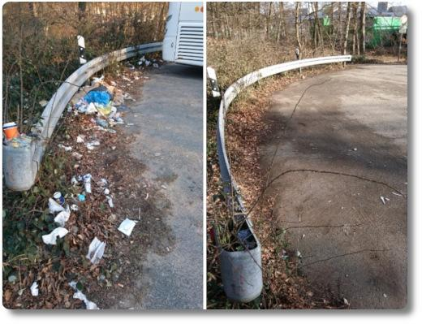

Eine Mail gegen den Müll
Ich komme in diesen Tagen immer wieder an einer echt dreckigen Ecke in Frankfurt vorbei. Da es irgendwann einfach zu viel wurde, um hier selber noch aufzuräumen, habe ich die FES, das Umweltamt und die Verwaltung des Bezirks Gateway Gardens angeschrieben. Und siehe da: Heute sieht der Parkplatz wie verwandelt aus. Ist doch nicht schlecht, oder? 👍💚🌳🌻🐞
Da hat meine Mail vielleicht wirklich etwas bewirkt.
